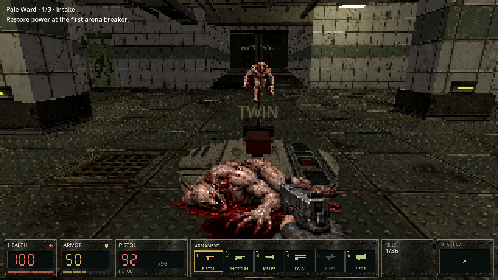
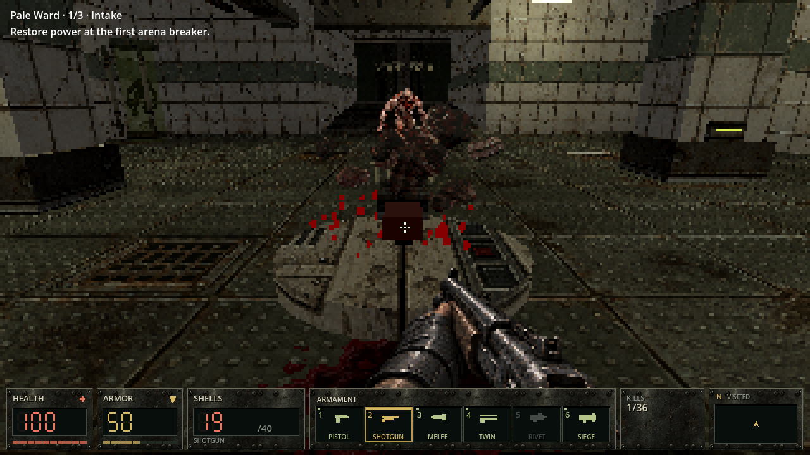
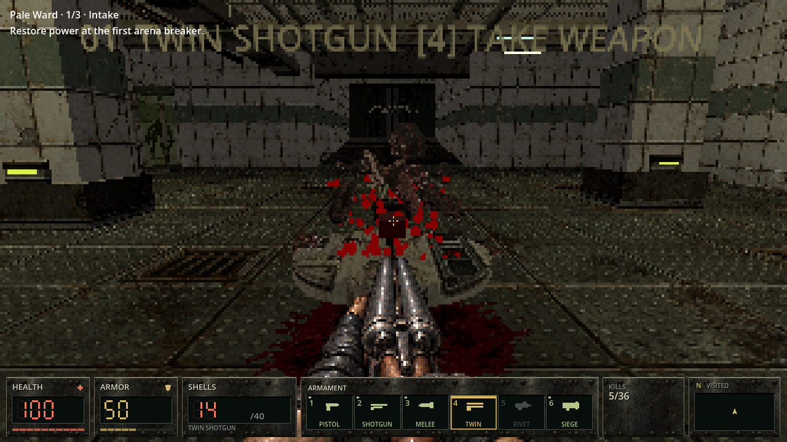
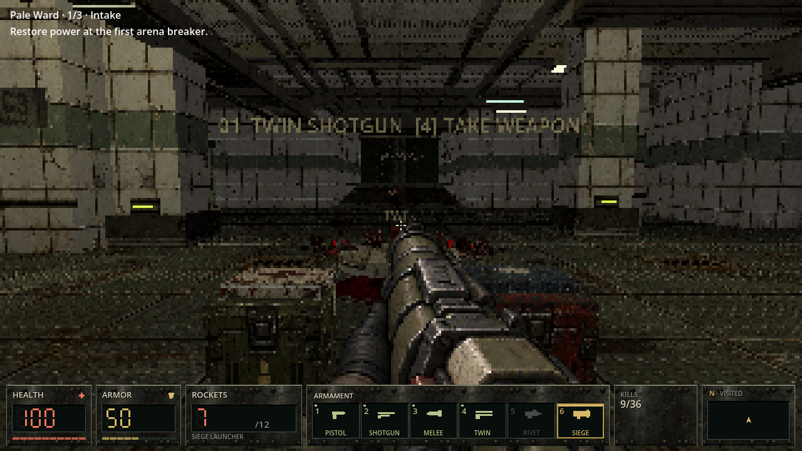
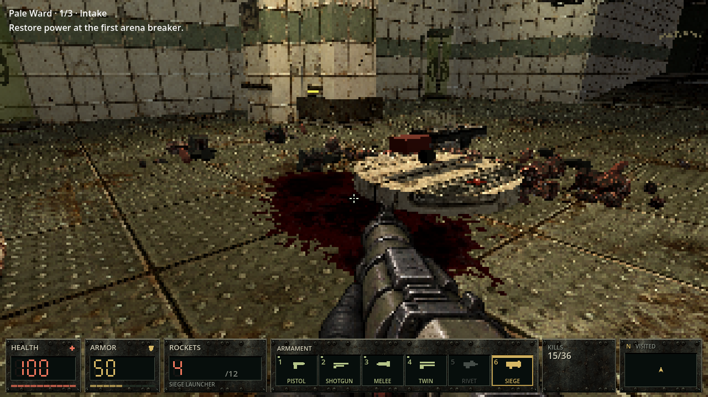
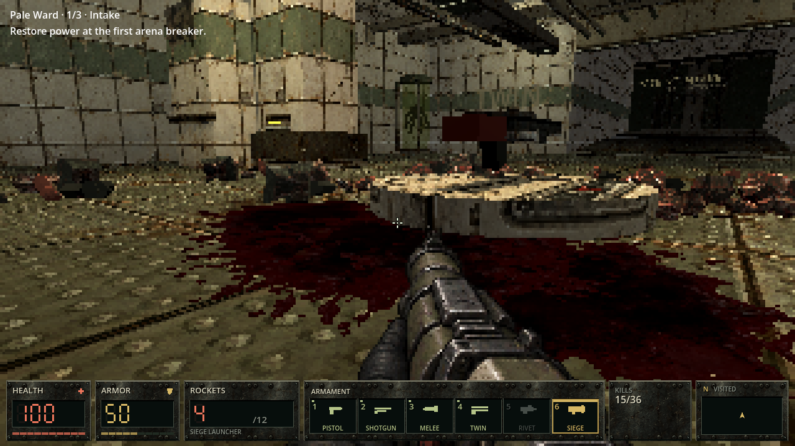

Heavy overkill and corpse gibbing release closed, textured chunks with three-axis tumble and supported resting poses. Ordinary deaths retain their corpses. Weapon-specific blood counts, spread, speed and force; Siege splash follows its blast origin. Blood stains conform to the world.
These are actual game renders from controlled, real-shot tests: camera and actors repositioned, AI frozen. Particles and damage use production code. No painted concept frames or image edits.






Current approach: low-poly beveled extrusions using existing anatomy textures. Full sculpted models are further art work. Effects are cosmetic, bounded, pause with gameplay and clear on Retry. Maps, weapon damage, enemy attacks, staff, lighting and accepted audio remain unchanged.